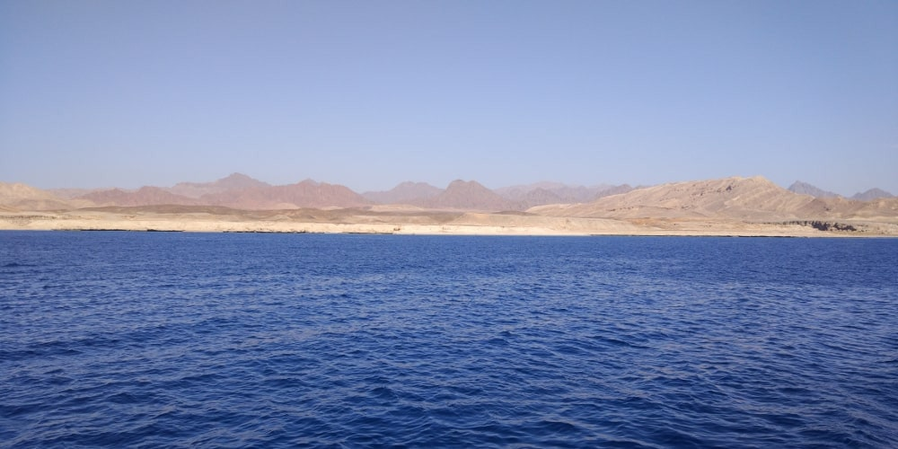

Рас Мохаммед

В Шарм Ель Шейху, вам обов'язково запропонують придбати погулянку на яхті в національний парк Рас Мохаммед. Блакитні вода і небо у контрасті із жовтогарячими горами та піском створюють неймовірні краєвиди. Але головна мета цієї мандрівки — заглянути у підводний світ — це дайвінг та снорклінг.
Читати